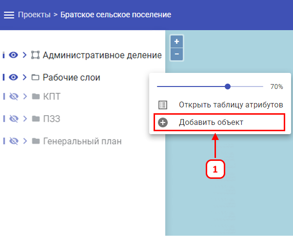
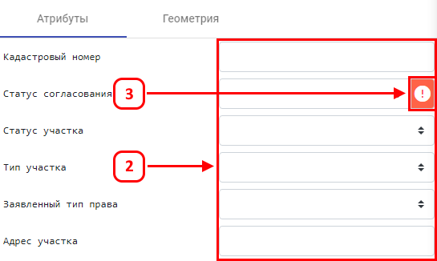
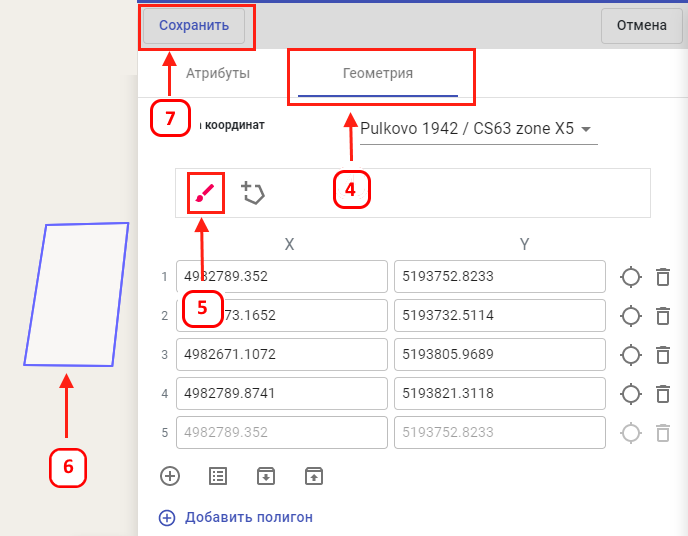

Для создания (добавления) объекта на карте, требуется:
-
В левой боковой панели выбрать требуемый слой с правами редактирования и кликнуть ЛКМ на значок управления слоем
, далее выбрать «Добавить объект». Откроется панель, где
необходимо ввести данные об объекте.
- Требуется максимально заполнить все имеющиеся данные об объекте.
-
Обязательно заполнить поля, обязательные к заполнению – они обозначены соответствующим значком
.
- Перейти на второй этап ввода данных, нажав на кнопку «Геометрия».
- Кликнуть на значок «Рисовать на карте».
-
Поставить необходимое количество точек в зависимости от типа геометрии:
- Для создания точечного объекта необходимо поставить 1 точку;
- Для создания линии необходимо не менее 2-х точек;
- Для создания полигона необходимо не менее 3-х точек.
- Сохранить изменения, для этого нажать кнопку «Сохранить».


